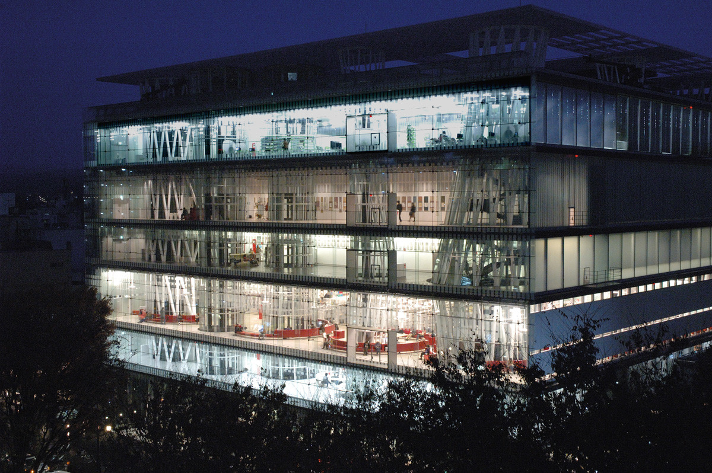
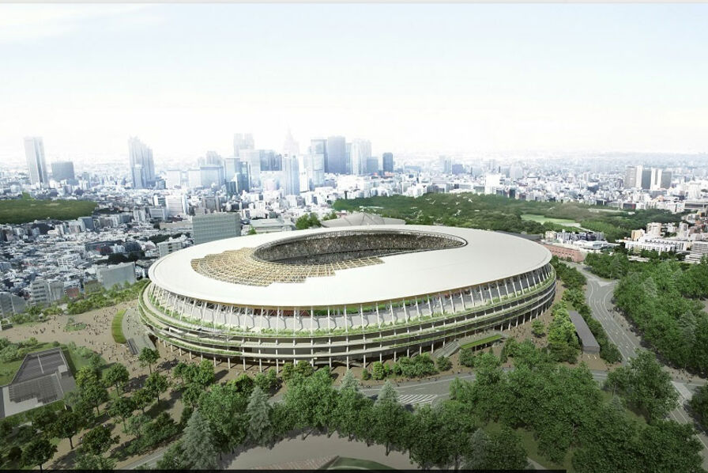

Itô Tôyô: Un architecte visionnaire
Itō Toyo est un architecte japonais né en 1941 à Séoul, en Corée. Il est considéré comme l’un des plus grands architectes contemporains, récompensé par de nombreux prix prestigieux, dont le prix Pritzker en 2013.
Son œuvre se caractérise par une recherche constante de la fluidité, de la légèreté et de la transparence. Il s’inspire aussi bien de la culture traditionnelle japonaise que des courants modernes et avant-gardistes.
Parmi ses réalisations les plus célèbres, on peut citer:
La Médiathèque de Sendai

La Médiathèque de Sendai
